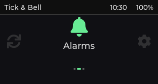

4. UI and polish¶
Official foundation: input routing and LVGL remain in the Template. Deliberate UI choices: horizontal movement belongs to the carousel or a value; vertical movement belongs to lists. The home dots show position without borrowing focus, and a text-only battery value keeps the status bar readable. These are design choices for my apps, not vendor compatibility rules.
For home carousels, use the position indicator component below the menu label. Tick & Bell follows NFC Tools’ placement: the title starts at y=82 and the dots at y=138 on the 320×170 screen. Keep that breathing room even without a subtitle. Lists are vertical: use Up/Down for selection, not Left/Right. A numeric battery percentage can sit flush right in the top bar without a glyph.

Tick & Bell in the desktop simulator. The wider center dot marks the selected menu.
Make every screen predictable, readable and usable from the keyboard. Apply the patterns relevant to the chosen UI stack and app behavior.
The official UI/shell evaluation identifies the current Template and shared-runtime foundations. Adapt colors, menus and layouts while preserving the chosen shell's lifecycle, input and backend boundaries. The demo's page names, palette and bar dimensions are implementation choices; personal preferences remain separate from platform contracts.
The constraints shape everything¶
- Fixed 320×170. Tiny and wide — design every screen for exactly this; nothing reflows. A few legible rows beat a dense grid. Don't cram.
- Keyboard only. No touch, no mouse. Navigation is keys. See the keyboard.
- Tight, swapping RAM. Keep assets small; don't hold big buffers.
- LVGL 9.5 is the toolkit, drawing to the framebuffer. Design in the desktop simulator first (see building and packaging). Check fonts and bounds at 320×170, then qualify device input, performance and hardware separately.
Use the MVVM + reactive structure¶
For apps built from the official LVGL Template, use its MVVM structure to keep screens consistent and state predictable. Other stacks should follow their own state/view conventions (see architecture choices):
- State lives in a model/viewmodel as reactive subjects; the view binds to them with the
reactive::bind_*helpers instead of being poked imperatively. BaseScreenis the screen base;BaseWidgetsthe widget base. Ascreen_managerswaps the visible screen when the current-page subject changes.- Add a screen: add a page enum, extend the model/viewmodel with a
show_<name>_page(), create aBaseScreensubclass underview/screens/, register it inscreen_manager. One screen = one file; the only central edit is oneswitchcase. - Add a widget: subclass
BaseWidgets, implementbuild(), bind withreactive::bind_*.
Consistent navigation is the biggest polish signal¶
Whatever navigation model you pick, make it identical on every screen — same keys, same positions, same back behavior. That consistency is what separates "polished" from "slop." Two proven approaches:
- A fixed function-key lane / bottom bar — a row of labelled chips mapped to fixed keys, where each chip always shows what its key does, so the user never guesses. Reserve it for actions that are otherwise hard to reach on a 46-key board — not for Enter/Esc, which are already easy.
- A d-pad model — map the device's arrow cluster (see the keyboard) to up/down/left/right selection, Enter to act, and Esc to go back everywhere (hold Esc to quit/home).
Reuse one well-made list screen for every list (menus, item lists), rather than a different layout per page.
Forms, clear outcomes and persistent actions¶
A complete form can serve as its own review. Do not require another summary page by habit when it only repeats values the user has just checked. Keep the primary action, such as 1: Save, in a fixed action lane outside the scrolling fields. Show routine navigation under Help and in the user guide; reserve scarce footer space for useful screen actions. Give the space back to content when no action is needed. Keep the action label consistent with the actual destination (for example, Save channel versus Save profile).
After scanning/importing, explicitly show success and the decoded item's name before settings. A method label such as "QR/share link" and a count alone can look like a reset. Distinguish "loaded into an unsaved form" from "saved"; preserve local entries on validation errors and Back. Confirm the named saved result.
Validation and service-side preparation can run behind the Save action without becoming a mandatory visible review step. Keep ownership, stale-state checks, request correlation and cancellation before the first write. Ignore repeated activation while busy; a held key must not skip a consequential confirmation or save twice. Numeric shortcuts must remain ordinary characters inside text fields.
Reject invalid or unsupported actions with a concrete reason. For valid changes with material side effects, use a brief, specific explanation/consent when needed rather than repeating the whole form. A guide supplements clear UI; it does not replace privacy choices. Physical risks that software cannot determine reliably still need appropriate user instructions and narrowly scoped acknowledgment.
Never block the UI thread¶
Long work — talking to a radio, a network call, shelling out to a tool — must not run on the LVGL thread. A frozen screen reads as broken. Do the work on a bounded worker or in a resource-owning service when needed (architecture), and marshal results back to the UI thread using the toolkit's supported dispatch mechanism. Select the thread/process boundary for this application's actual needs.
Show what's happening¶
- Show useful progress for long operations. A bounded, redacted log pane can suit a diagnostic tool; a short status or progress value can suit a simple task.
- Show relevant status (connection or unread count) when it helps the task. Reuse the chosen foundation's supported status source and avoid redundant polling. Do not add a battery icon to the header by default. My personal preference keeps any useful battery percentage as text without a battery glyph; see the preference record.
When removing a status element, check its unchanged neighbors on the actual framebuffer, in both themes and after live updates. A desktop screenshot can miss partial-redraw problems. If hardware evidence shows a sibling being erased, invalidate the bounded status strip when needed rather than refreshing every screen or keeping a hidden decorative widget as a workaround.
Keep routine startup and reconnect preference synchronization quiet. Apply the saved setting and return a correlated acknowledgment without a success toast; confirm deliberate user changes when useful. Do not skip synchronization or suppress all notices to hide one distracting message. Failures must remain visible. Test first connection, reconnect, explicit changes, actual enforcement and error replies separately; validate any optional quiet flag as a boolean.
Theme: support light and dark¶
- Keep colors in one constants file — never hardcode a color per widget.
- Offer a light/dark toggle and make sure both are legible. At 320×170, contrast and font size matter more than cleverness. Test both themes in the simulator.
- Use semantic color, not decorative — screens ask for meanings (
warning,good-signal, "the row you're on") and the theme maps them to pixels. Use a border consistently to indicate selection, and keep its meaning and contrast clear.
Style a text editor's background, entered text, placeholder and cursor for the selected theme; setting only the screen background is insufficient. A widget can inherit colors from a global theme initialized earlier. Check an empty editor, entered text, focus and theme changes, including opening and closing overlays. This is an integration check, not evidence that the official widget is defective.
Treat meaningful secondary text differently from unavailable controls. A current setting value or delivery result must remain readable; a muted color must not make it look disabled. Check both foreground/background pairs in message bubbles and other colored surfaces. Pair freshness or status colors with text or shape, and retain approved component styling deliberately rather than changing it as a side effect of a global palette adjustment.
Build screenshots into the app¶
Bind a key to dump the active screen to a PNG with a small confirmation toast. You need 320×170
PNG screenshots for a Store listing (and your README) anyway, so have the app produce them itself —
it's the most authentic way to capture the real screens. (On the device, the framebuffer can also be
read directly from /dev/fb0 for the same effect.)
Errors and empty states¶
- Show failures on screen, in plain words, not just in the log. A hardware app that can't reach its device should say so and what to check ("camera busy; close the other camera app").
- Give empty states a line of guidance ("No notes yet — press Enter to create one"), not a blank panel.
Accessibility and discoverability¶
Label important actions in plain words and provide a keyboard route to every control, including scrolling information dialogs and dismissing overlays. Keep focus visible. Pair color with text/shape so color alone does not identify a failure, selection or privacy state. Check contrast in both themes and offer readable text sizes within the actual glyph inventory. Do not hide the only hint behind a long name or rely on a mouse/touch action on the device.
Glyph discipline¶
Decide the font/glyph inventory per screen and make sure every character you render actually exists in the font — a missing glyph renders as a tofu box and screams "unfinished." If you add icons (e.g. from a symbol font), confirm the sizes you use are compiled in.
UI checklist¶
- [ ] Consistent navigation on every screen; Esc always goes back; every action key labeled.
- [ ] Reads cleanly at 320×170 — legible font, not crammed.
- [ ] Both light and dark themes tested in the simulator.
- [ ] UI never freezes — all slow work off the LVGL thread.
- [ ] Long operations show progress; errors shown on screen in plain words; empty states guided.
- [ ] Relevant status is visible; no unnecessary status bar or polling.
- [ ] A real icon (not the template default) and real 320×170 screenshots.
- [ ] No missing-glyph boxes anywhere.
- [ ] No placeholder/
TODOtext anywhere in the UI or metadata.
Privacy state and asynchronous overlays¶
For asynchronous settings, show confirmed, Pending and Unknown states. Expire pending actions after a deadline. Read back actual state when the underlying API requires it; editing a cache is not confirmation. Use stable record/request IDs and stop accepting a dismissed view's late results. A timeout can leave an outcome unknown; it does not prove the backend rolled a write back.
Remove observers and timers with their owning views. Never hold an LVGL pointer or a pointer into a reallocating vector across a worker callback or rebuild. Keep global Help/Esc ownership explicit so input cannot reach a hidden editor. Test navigation away, list reordering, repeated Return and disconnect while busy.
First run and uncertain live data¶
Provide safe defaults, explain actual prerequisites, preserve existing data and make consequential actions deliberate. Ask only for settings relevant to the app. A local calculator may need no wizard. A hardware transmitter requires additional consent described in its project section. Show actionable failure reasons.
Measurements need valid values, a meaningful timestamp and a freshness policy. Show stale data as last known; unknown is different from zero. Coalesce updates and refresh age labels. Device GPS and camera details belong in GPS/maps and camera/QR.
Persistence and redraws¶
Debounce text saves by a pause in typing, flush at defined navigation/close boundaries and keep rejected edits recoverable. Do not serialize local saves behind unrelated slow hardware jobs. Quiet hours need local-time and midnight semantics only if the app actually offers notifications.
Compare effective state before rebuilding object trees, while still handling request completion and genuine changes. Preserve selection by stable identity through reordering and define a consistent tie order. Prepare/index list data once instead of repeating searches for every visible row. Measure realistic workloads; a synthetic improvement is not a measured battery-life benefit.
Update selection styles and changed field values in place when layout is stable. Avoid reconstructing every row on each arrow key or subscribing to several subjects that each cause an identical initial rebuild. Preserve stable targets, scrolling and observer ownership. If a selected record disappears, require a safe explicit selection rather than silently acting on its replacement. Use small shared visual helpers where they simplify actual callers; keep each screen's confirmation, editing and resource lifetime explicit. Review cache ownership when consolidating records: retaining large previews can extend their memory lifetime. Selection helpers should not allocate unused styles on every unselected row.
Observe independent facts independently: a mode can change while connection state stays Online. Refresh age/freshness and time-based filters even when no new hardware event arrives. A presentation clock can update existing age labels and markers without rebuilding the whole screen; bind its callbacks to screen/object lifetime and test destruction as well as stale/future-time boundaries. Unknown state must remain unknown after disconnect. Poll only the device facts actually displayed. Measure operation counts separately from timing, using the same build and data before/after; qualify device performance separately from host results.
Keep context and keyboard help readable¶
Keep the current task/record in a bounded header and reserve the footer for short keyboard hints or text entry. Truncate descriptive detail before information needed to understand the action's target. Check real font/pixel bounds with long names, selection, typing, scrolling and return navigation.
An LVGL outline can be clipped outside a tightly fitted parent. Use an inside border or sufficient parent clearance. Keep border plus padding insets stable so selection does not move text or resize the row. Verify both light and dark themes.
Group settings with nonselectable headings and give actions stable keys independent of display order. Navigate through selectable actions; give long overlays scrolling and an Escape path. Tests should find a setting by identity/label instead of a historic number of Down presses, especially for privacy or destructive operations.
Detailed examples remain in Mesh UI lessons. Next: the keyboard.
Keep a complete setup in one place¶
When a task spans several settings, provide one shared setup flow with a local draft across field editors and validation errors. Several entry points can open the same flow; remove obsolete independent paths rather than keeping duplicate implementations. Show which values belong to one item and which affect the whole device. Imported settings can be suggestions without silently replacing active configuration or device-specific calibration. Offer a separate saved profile when that is useful, with its effect on the active session explicit.
Describe a saved setup's contract before applying it: what is saved, what stays unchanged, what is deliberately reset, and any prerequisite such as releasing a resource first. Do not imply that a profile restores every operating mode when it stores only configuration. A safe reset must still be predictable. Mesh's transmission/location defaults are a radio-specific example, not a rule that all applications must disable their hardware when switching profiles.
Use the fixed heading/action arrangement described under forms, with selection updated in place. Test long errors, UTF-8 byte limits, masked secrets, deep selection, both themes, Escape, repeated Return, late replies and destroyed screens. Preserve an imported token when returning to edit an unrelated field; closing setup should cancel the whole draft.
Separate local preparation, explicit Save, stored verification, live hardware readback and actual connectivity/delivery. Cancellation before Save changes nothing; once a write has started, explain that leaving cannot undo it. Report partial success and uncertain outcomes explicitly so users do not duplicate an operation. Mesh exercises this pattern in its unified channel setup; the pattern also applies to network, peripheral and other device configuration tools.
Task clarity and recovery¶
For form actions and validation, use forms and clear outcomes; for setup scope and saved profiles, use complete setup. The personal preference record separately specifies my direct two-choice rows and selection menus.
Use Cancel-first confirmation for irreversible deletion when Undo is not available. Bind the action to a stable identity rather than a moving row. The prompt must name the scope: one item versus its history, draft or saved setup, and local copies versus copies elsewhere. Cancelling the prompt must not submit a destructive operation. Re-resolve the captured identity when confirming; an item that vanished must not be replaced by the next row. Test Cancel, Esc, repeated keys and new/reordered content while the prompt is open, and clear the pending action when the prompt closes.
Communication outcomes and search limits belong in the messaging recipe; readable values and non-color cues are covered under theme states.
Form section headings and explanatory rows are not actions. Skip them during keyboard navigation and wrapping; keep the selected field, its nearby section heading and the primary action understandable as the viewport moves. Use the selected toolkit's overflow-only scrollbar behavior and reserve space for its marker. Check both overflowing and fully visible lists.
Validate complete tasks as well as isolated screens: create/import, edit, cancel, save, reopen, switch a saved setup and recover from a failed operation. Host renders, headless replay on the actual device and a physical operator walkthrough answer different questions. Replay with synthetic commands and installed fonts can check the UI without opening hardware; it does not prove physical key input, framebuffer ownership, RF delivery or outdoor positioning.